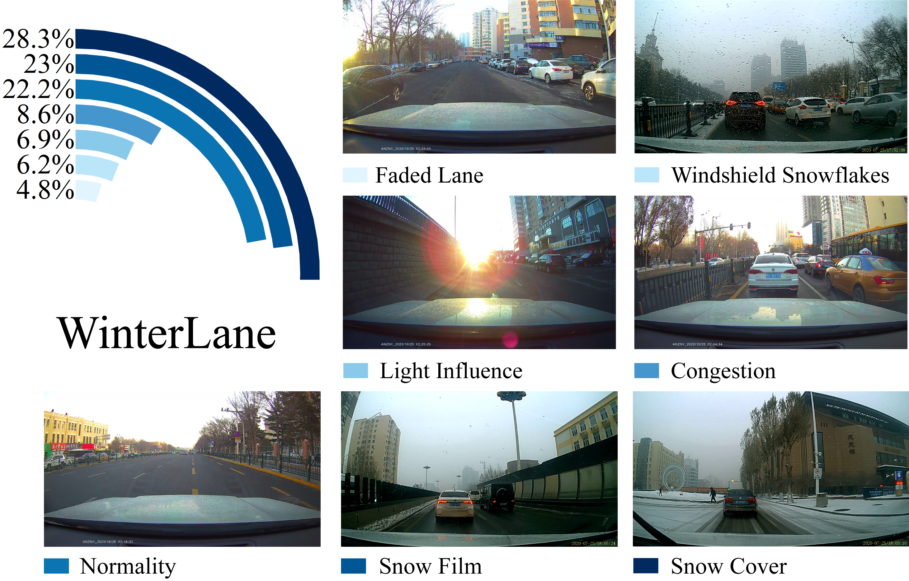
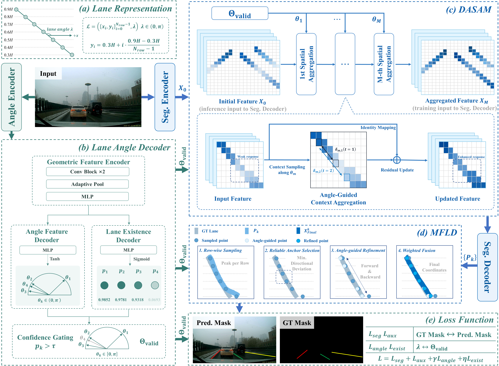
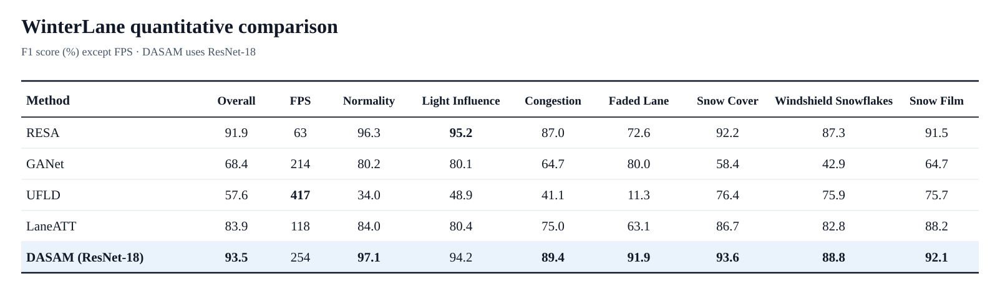
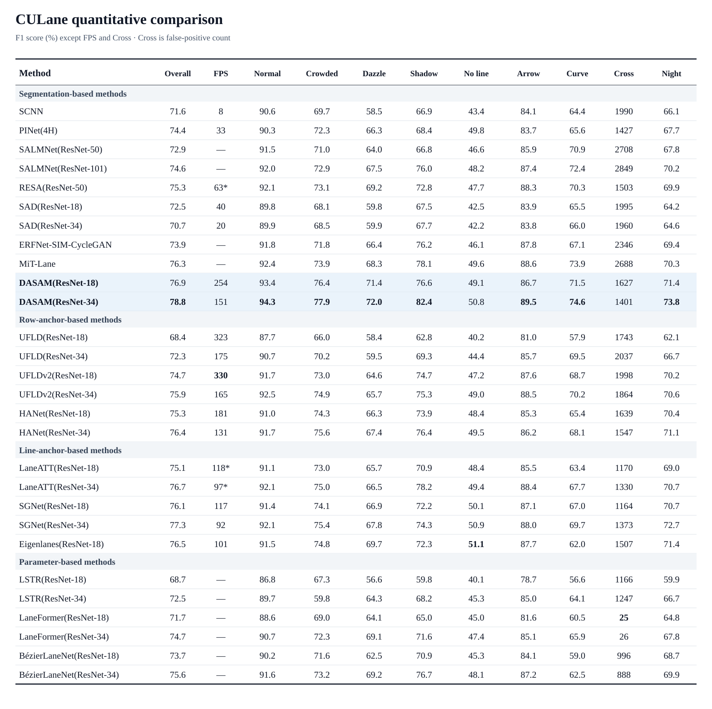
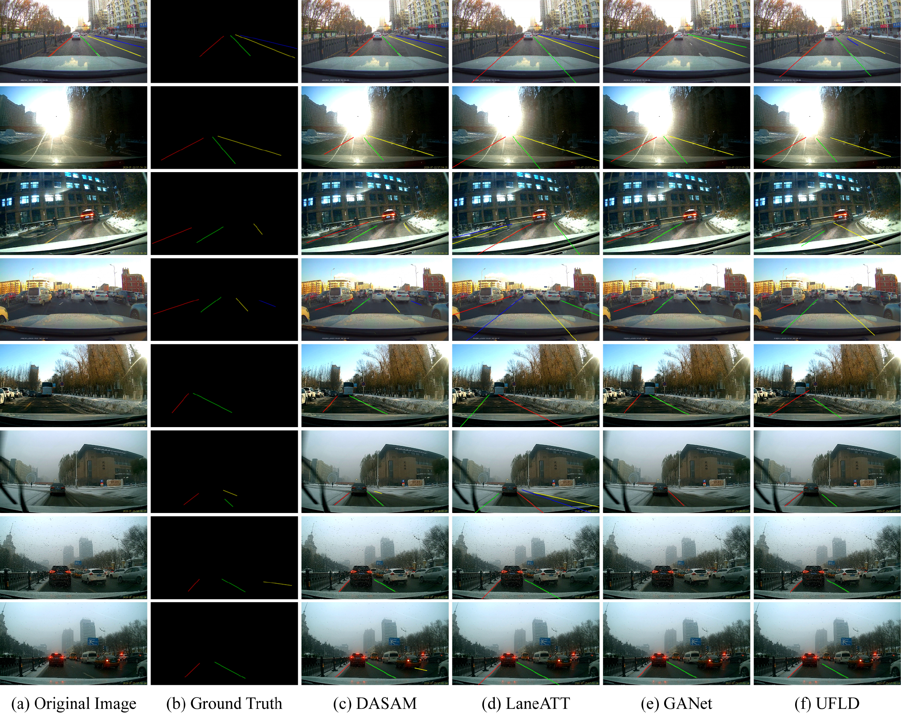

Lane detection in snowy environments
WinterLane
A Dynamic Angle-Aware Network with Multimodal Fusion for Robust Lane Detection in Snowy Environments
1School of Transportation Science and Engineering, Harbin Institute of Technology
2School of Automobile and Traffic Engineering, Heilongjiang Institute of Technology
WinterLane in action
Video demonstrations
Lane detection across 12 clips from seven WinterLane categories. Videos play muted when in view; the upper-left overlay reports the method's running speed in FPS.
Snow Cover II
Snow Film I
Snow Film II
Windshield Snowflakes I
Windshield Snowflakes II
Light Influence I
Light Influence II
Congestion I
Congestion II
Normality
Faded Lane
Dataset
A real-world benchmark for lane detection on snowy urban and campus roads.

WinterLane was collected from 121 one-minute dashcam videos recorded in Harbin, China. It contains 11,895 lane-instance annotated images at 1920 × 1080 resolution, with 10,991 images for training and 904 for testing. Each image provides lane annotations, keypoint coordinates, instance masks, and annotation visualizations.
Method
Predicted lane orientation guides feature aggregation and final lane coordinate refinement.

Feature aggregation
DASAM
Aggregates contextual features along predicted lane orientations during training.
Lane coordinates
MFLD
Combines lane probability maps and global orientation angles through anchor selection, refinement, and coordinate fusion.
Results


Qualitative results on WinterLane
